Exercises
Variant callingVariant Calling Tutorial
This tutorial will provide you with the practical skills needed to analyze next-generation sequencing data in a clinical and research context. Upon completion of this session, you will be able to:
- Interpret sequencing evidence: master the use of Integrative Genomics Viewer (IGV) to visually inspect and validate genomic features, variant calls, and alignment artifacts.
- Run a somatic call pipeline: apply a bioinformatics workflow based on best practices to accurately identify somatic variants from a matched pair of tumor and normal samples.
- Predict functional impact: use tools such as the Variant Effect Predictor (VEP) to annotate variants and predict their biological consequences, from amino acid changes to effects on gene expression.
- Prioritize actionable variants: develop a strategic approach to filter and prioritize mutations with the highest probability of being oncogenic drivers or therapeutic targets in a cancer genome.
Attribution: This tutorial is inspired by the Precision medicine course, from the Griffith lab and Cancer variant analysis from SIB.
Tutorial Outline
1. Setup
Tools of the trade
Setup I
Running IGV (Integrative Genomics Viewer) 💻
IGV is available as a powerful **Desktop Application** (Java-based) and a convenient **Web App** (JavaScript-based).
Option 1: IGV Web App (Recommended for Quick Access) ✅
If you don't already have the desktop version installed, the **Web App** is the fastest way to start viewing your data.
# Go to the official Web App URL
https://igv.org/app/
- **No Installation** required—it runs entirely in your modern web browser.
- Load files directly from your **local machine** or a **public URL** (e.g., BAM, VCF, BigWig).
- No data is uploaded; the viewer runs as a secure, client-side application.
Option 2: IGV Desktop Application (For Full Power) 🚀
The desktop version provides a more robust and flexible experience, particularly for very large or complex datasets.
- **Requires Java** and a local download (Windows, Mac, or Linux).
- Allows you to allocate more **RAM** (memory) for extremely large-scale data files.
- Provides access to **advanced tools** like IGVtools for local data manipulation.
Use the desktop version if you run into performance issues with the Web App or need advanced features.
Installing bcftools 🛠️
We recommend using a package manager like Conda/Mamba for simple, isolated installations.
Method 1: Conda/Mamba (Recommended)
mamba create -n bcftools_env bcftools
conda activate bcftools_env
bcftools --version
- Mamba is often faster than Conda.
- The environment name (`bcftools_env`) is arbitrary.
- This method handles dependencies automatically.
Method 2: From Source (Advanced)
Requires `git`, `make`, and `gcc` (or similar compiler).
git clone --branch=develop https://github.com/samtools/bcftools.git
cd bcftools
make
sudo make install
Remind: users that "make install" might require specifying an install path with PREFIX.
Verification
Run the help command to ensure it's installed correctly:
bcftools
The output should display the usage summary.
Installing GATK4 (Genome Analysis Toolkit)
GATK is a Java-based tool, but **GATK4** has complex Python/R dependencies for tools like CNV and CNNScoreVariants.
Recommendation: Use a container or Conda/Mamba to manage dependencies.
Method 1: Conda / Mamba (Recommended for Local Use)
This is the most common way to get an isolated environment and automatically handle all dependencies.
# 1. Create a Conda/Mamba environment
mamba create -n gatk4_env gatk4 -c bioconda -c conda-forge
# 2. Activate the environment
conda activate gatk4_env
# 3. Test the installation
gatk --version
GATK4 requires **Java 1.8 (Java 8)** or newer, which Mamba installs automatically.
Method 2: Docker / Singularity (Best for HPC)
The Broad Institute provides official containers with everything pre-configured.
# Docker command to pull the official image
docker pull broadinstitute/gatk:latest
# Docker command to run a simple tool
docker run --rm broadinstitute/gatk:latest gatk --list
# For Singularity (as mentioned in your context)
singularity pull docker://broadinstitute/gatk:latest
# Then run:
singularity run gatk_latest.sif gatk --version
Using containers ensures **100% reproducibility** across different machines.
Method 3: Download Binaries (Requires Java & PATH Setup)
Download the ZIP archive from the official Broad Institute GitHub releases page.
# 1. Download and unzip the package
wget https://github.com/broadinstitute/gatk/releases/download/[VERSION]/gatk-[VERSION].zip
unzip gatk-[VERSION].zip
# 2. Add the wrapper script to your PATH
export PATH="/path/to/gatk-package/:\$PATH"
You must have Java 8+ installed separately, and this method requires careful setup of Python/R dependencies for some tools.
Installing MultiQC 📊
MultiQC aggregates results from multiple bioinformatics tools (FastQC, Samtools, etc.) into a single, interactive report.
It's a Python tool, so installation is easiest using a package manager.
Method 1: Conda / Mamba (Recommended)
Using Conda/Mamba is preferred as it manages the Python environment separately from your system's Python.
# 1. Create a Conda environment (optional, but good practice)
mamba create -n multiqc_env multiqc -c bioconda
conda activate multiqc_env
# 2. Alternatively, install into an existing environment
# (Ensure bioconda and conda-forge channels are configured)
conda install multiqc
# 3. Verify
multiqc --version
MultiQC is part of the **Bioconda** channel, which must be configured in your Conda setup.
Method 2: Pip (Python's Package Installer)
This is the fastest method if you already use a Python environment manager like `venv` or `virtualenv`.
# Install MultiQC globally or in a virtual environment
pip install multiqc
# If permissions are an issue (not recommended, but a quick fix)
# pip install --user multiqc
Always use `pip` within a **virtual environment** (`venv` or Conda) to avoid conflicts with your system Python.
Basic Usage and Output 🖱️
Run the command inside the directory that contains your QC log files (e.g., FastQC output, Samtools logs).
# MultiQC searches the current directory recursively
multiqc .
Output is a single, self-contained HTML file:
multiqc_report.html
Installing SAMtools (and HTSlib) 🧬
SAMtools is a core toolkit for manipulating alignment files (SAM/BAM/CRAM) and is tightly linked with HTSlib.
Method 1: Conda / Mamba (Recommended) ✅
This is the best practice method as it automatically handles all dependencies (like HTSlib, zlib, and ncurses) and avoids system conflicts.
# 1. Ensure Bioconda and Conda-forge channels are configured
# (Run this once)
conda config --add channels conda-forge
conda config --add channels bioconda
# 2. Create a new environment and install SAMtools
mamba create -n samtools_env samtools
conda activate samtools_env
# 3. Verify the installation
samtools --version
Using **Mamba** instead of Conda for creation/installation is often faster for resolving bioinformatics dependencies.
Method 2: Compilation from Source (Advanced) ⚙️
Requires development tools, HTSlib, and library dependencies (e.g., `libncurses-dev`). Use only if package managers fail or a specific version is needed.
# 1. Download source code (SAMtools and HTSlib)
wget http://www.htslib.org/download/samtools-1.x.tar.bz2
tar -xf samtools-1.x.tar.bz2
cd samtools-1.x
# 2. Build and install (HTSlib is often built first, or included)
./configure --prefix=/path/to/install
make
make install
Compiling from source requires you to manually manage the **$PATH** variable to execute the commands.
Essential SAMtools Commands 📌
After alignment (e.g., with BWA or Bowtie), these are the core utilities you'll use on your BAM/CRAM files.
samtools view: **Convert** between SAM, BAM, CRAM, and filter alignments.samtools sort: **Sort** alignments by position or read name (required for indexing).samtools index: **Create index** files (.baior.crai) for fast random access.samtools mpileup: **Generate pileup** from multiple BAM/CRAM files for variant calling.samtools flagstat: **Calculate statistics** on alignment flags (e.g., total reads, mapped reads).
samtools sort input.bam -o sorted.bam
samtools index sorted.bam
Installing Ensembl Variant Effect Predictor (VEP) 🧬
VEP is a powerful Perl script for annotating VCFs. It requires Perl modules and large, species-specific **cache files** for offline use.
Method 1: Conda / Mamba (Recommended for Setup) ✅
This method easily installs the VEP script and all necessary Perl dependencies (like the Ensembl Perl API).
# 1. Create a VEP-specific environment
mamba create -n vep_env "ensembl-vep"
conda activate vep_env
# 2. VEP is installed, but the CACHE is NOT.
# The cache must be downloaded manually or via the VEP installer.
# Recommended location: $HOME/.vep/
Advantage: Resolves complex Perl and other non-Perl dependencies in one step.
Disadvantage: You still need to manage the cache files.
Step 2: Installing the VEP Cache (Mandatory for Offline Use) 💾
You must download the species-specific cache file for offline, high-speed annotation.
# 1. Clone the repository to get the installer script
git clone https://github.com/Ensembl/ensembl-vep.git
cd ensembl-vep
# 2. Run the installer script for the cache
# (This will be a large download, e.g., ~10-20 GB for human)
perl INSTALL.pl
# Follow the prompts:
# a) Skip API installation (if using Conda VEP)
# b) Select 'y' to install cache files
# c) Select your species and assembly (e.g., 'homo_sapiens_vep_115_GRCh38.tar.gz')
Best Practice: Use the cache (--cache flag) for large files; use the online database (--database flag) for small, quick tests.
Method 2: Official Perl Installer (Alternative) ⚙️
The original method; the single script handles both VEP, dependencies, and cache installation.
# 1. Clone the repository
git clone https://github.com/Ensembl/ensembl-vep.git
cd ensembl-vep
# 2. Run the all-in-one installer script
# This installs: VEP script, Perl dependencies, and the cache.
perl INSTALL.pl
Caveat: This method can sometimes struggle with dependency resolution if your system's Perl environment is complex or outdated.
Testing the Installation and Basic Run ▶️
Always test with an example file and ensure you specify the use of the cache.
# Activate the Conda environment (if used)
conda activate vep_env
# The VEP executable is typically in your PATH (Conda)
# or the cloned directory (Manual Install)
./vep \
-i examples/homo_sapiens_GRCh38.vcf \
-o my_vep_output.txt \
--cache \
--force_overwrite
The --cache flag tells VEP to use the local cache files you downloaded.
End of Setup
Back to top2. IGV Tutorial
A Guide to Visualizing NGS Data
Exploring BAM Files with IGV
We will be visualizing read alignments using IGV, a popular visualization tool for NGS data.
Dataset for IGV
We will be using publicly available Illumina sequence data from the HCC1143 cell line.
The HCC1143 cell line was generated from a 52 year old caucasian woman with breast cancer.
Additional information on this cell line can be found here:
- HCC1143 (tumor, TNM stage IIA, grade 3, primary ductal carcinoma).
From the github folder XXX please download the bam/bai files from HCC1143 (these files have been filtered to this region: chr 21: 19000000-20000000).
Download hg19 reference genome
To add a new genome in IGV go to Genomes > Select Hosted Genome... and then look for the desired Genome. Press OK to download it.
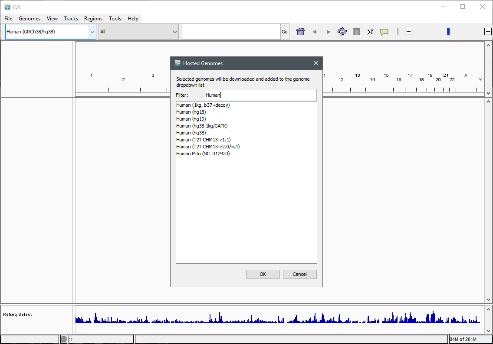
Load a Genome and some Data Tracks I
By default, IGV loads the Human GRCh38/hg38 reference genome. If you work with another version of the human genome, or another organism, you can change the genome by clicking the drop down menu in the upper-left corner. For this tutorial, we will be using Human GRCh37/hg19. We will also load additional tracks from the Server using (File -> Load from Server...):
- Available Datasets -> Annotations -> Genes > Ensembl Genes
- Available Datasets -> Annotations -> Sequence and Regulation -> GC Percentage
- Available Datasets -> Annotations -> Variantion and Repeats -> dbSNP 1.4.7
- Available Datasets -> Annotations -> Variantion and Repeats -> Repeat Masker
Load a Genome and some Data Tracks II
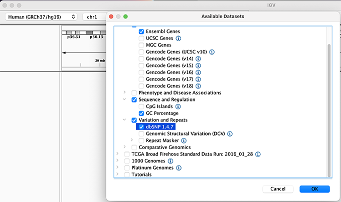
Load hg19 genome and additional data tracks
Navigation
You should see listing of chromosomes in this reference genome. Choose 1, for chromosome 1.
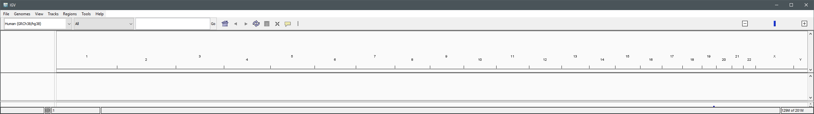
Chromosome chooser
Navigate to chr1:10,000-11,000 by entering this into the location field (in the top-left corner of the interface) and clicking Go. This shows a window of chromosome 1 that is 1,000 base pairs wide and beginning at position 10,000. You can navigate to a gene of interest by typing it in the same box the genomic coordinates are in and pressing Enter/Return. Try it for your favourite gene, or BRCA1 if you can not decide.
Gene model
Genes are represented as lines and boxes. Lines represent intronic regions, and boxes represent exonic regions. The arrows indicate the direction/strand of transcription for the gene. When an exon box become narrower in height, this indicates a UTR.
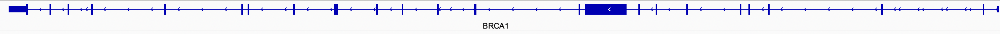
Gene
When loaded, tracks are stacked on top of each other. You can identify which track is which by consulting the label to the left of each track.
Loading Read Alignments
We will be using the breast cancer cell line HCC1143 to visualize alignments. For speed, only a small portion of chr21 will be loaded (19M:20M). Dowanload HCC1143.normal.21.19M-20M.bam and HCC1143.normal.21.19M-20M.bam.bai from the Git repository to your local drive. In IGV select Human (GRCh37/hg19) reference genome. Then choose File > Load from File..., select the bam file, and click OK. Note that the bam and index files must be in the same directory for IGV to load these properly.

HCC1143 Alignments to hg19
Visualizing read alignments I
Navigate to a narrow window on chromosome 21: chr21:19,480,041-19,480,386.
To start our exploration, right-click on the read alignment track, and select the following options:
- Sort alignments by -> start location
- Group alignments by -> pair orientation
Visualizing read alignments II
Experiment with the various settings by right clicking the read alignment track and toggling the options. Think about which would be best for specific tasks (e.g. quality control, SNP calling, CNV finding).
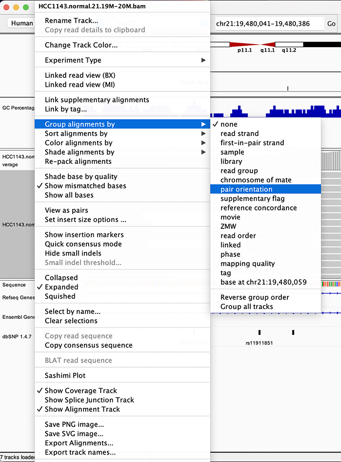
Changing how read alignments are sorted, grouped, and colored
Visualizing read alignments III
You will see reads represented by grey or white bars stacked on top of each other, where they were aligned to the reference genome. The reads are pointed to indicate their orientation (i.e. the strand on which they are mapped).
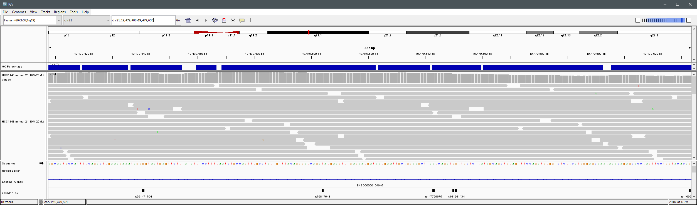
Mouse over any read and notice that a lot of information is available. To toggle read display from hover to click, select the yellow box and change the setting.
Viewing read information for a single aligned read

Inspecting SNPs, SNVs, and SVs
In this section we will be looking in detail at 8 positions in the genome, and determining whether they represent real events or artifacts.
Two neighbouring SNPs
- Navigate to region chr21:19,479,237-19,479,814
- Note two heterozygous variants, one corresponds to a known dbSNP (G/T on the right) the other does not (C/T on the left)
- Zoom in and center on the C/T SNV on the left, sort by base (window chr21:19,479,321 is the SNV position)
- Sort alignments by base
- Color alignments by read strand
Good quality SNVs/SNPs
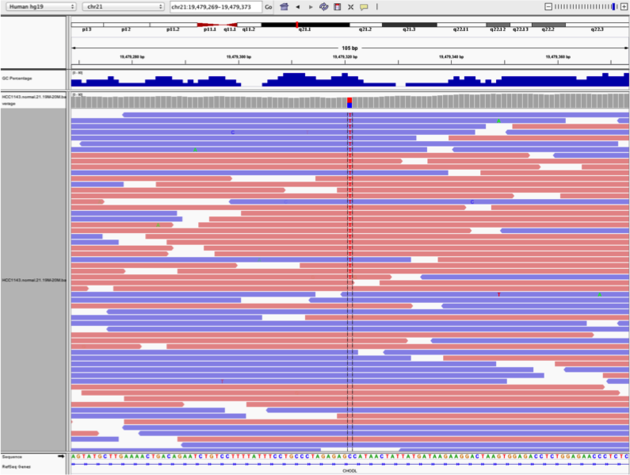
- High base qualities in all reads except one (where the alt allele is the last base of the read)
- Good mapping quality of reads, no strand bias, allele frequency consistent with heterozygous mutation
Homopolymer region with indel I
Navigate to position chr21:19,518,412-19,518,497
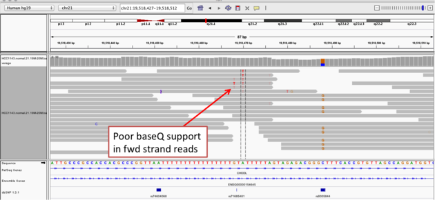
- Group alignments by read strand
- Center on the A within the homopolymer run (chr21:19,518,470), and Sort alignments by -> base
Homopolymer region with indel II
Center on the one base deletion (chr21:19,518,452), and Sort alignments by -> base

- The alt allele is either a deletion or insertion of one or two Ts
- The remaining bases are mismatched, because the alignment is now out of sync
Coverage by GC
Navigate to position chr21:19,611,925-19,631,555. Note that the range contains areas where coverage drops to zero in a few places.
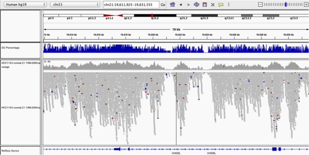
- Use Collapsed view
- Color alignments by -> insert size and pair orientation
- Group alignments by -> none.
- Load GC track (if not already loaded above)
- See concordance of coverage with GC conten
Heterozygous SNPs
Navigate to region chr21:19,666,833-19,667,007 Sort by base (at position chr21:19,666,901)
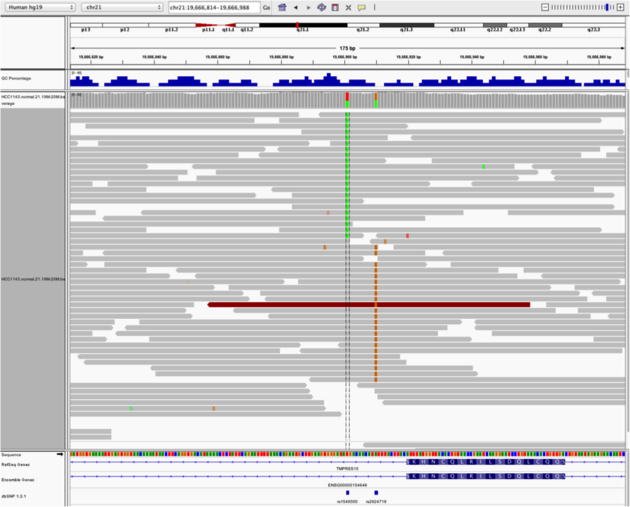
There is no linkage between alleles for these two SNPs because reads covering both only contain one or the other
Low mapping quality
Navigate to region chr21:19,800,320-19,818,162

Mapping quality plunges in all reads (white instead of grey). Once we load repeat elements, we see that there are two LINE elements that cause this.
Homozygous deletion I
Navigate to region chr21:19,324,469-19,331,468
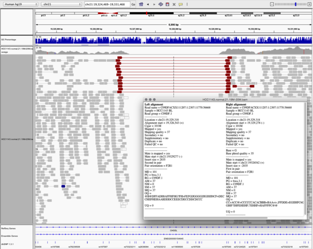
Homozygous deletion II
Then
- Turn on View as Pairs and Expanded view
- Use Color alignments by -> insert size and pair orientation
- Sort reads by insert size
- Click on a red read pair to pull up information on alignments
Note:
- Typical insert size of read pair in the vicinity: 350bp
- Insert size of red read pairs: 2,875bp
- This corresponds to a homozygous deletion of 2.5kb
Mis-alignment I
Navigate to region chr21:19,102,154-19,103,108
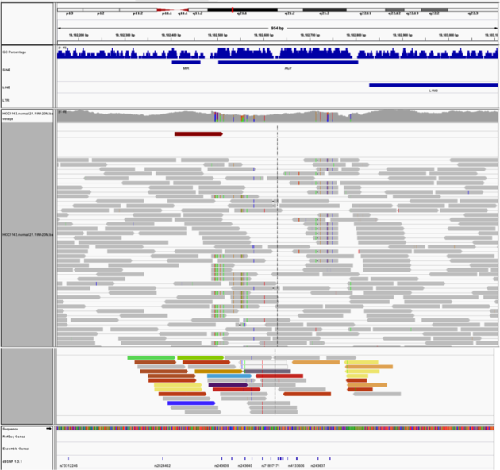
Mis-alignment II
- This is a position where AluY element causes mis-alignment.
- Misaligned reads have mismatches to the reference and well-aligned reads have partners on other chromosomes where additional AluY elements are encoded.
- Zoom out until you can clearly see the contrast between the difficult alignment region (corresponding to an AluY) and regions with clean alignments on either side
Translocation
Navigate to region chr21:19,089,694-19,095,362

- Expanded view
- Color alignments by -> insert size and pair orientation
- Many reads with mismatches to reference
- Read pairs in RL pattern (instead of LR pattern)
- Region is flanked by reads with poor mapping quality (white instead of grey)
- Presence of reads with pairs on other chromosomes (coloured reads at the bottom when scrolling down)
End of IGV tutorial
Back to top3. Data Quality
The First Step to Confident Calls
Quality Control of BAM Files – Part I
We will begin our exercises using pre-aligned BAM files. Start by downloading the dataset from the provided source. The directory structure is as follows:
- alignments: contains BAM files for tumor and normal samples.
- reference: contains the genome FASTA file and target intervals.
- resources: includes variant files (VCF) from resources such as the 1000 genomes project and gnomAD, and subsets of the clinvar and alphamissense databases.
- scripts: an empty folder for storing your scripts.
Quality control of the bam files – Part II
The dataset was prepared by the developers of the Precision medicine bioinformatics course at the Griffith lab (McDonnell Genome Institute, Washington University).
It consists of whole-exome sequencing data from cell lines derived from:
- A triple-negative breast cancer tumor HCC1395
- Matched normal tissue HCC1395 BL
Quality control of the bam files – Part III
We begin by examining the BAM file headers to understand file content and processing details (samtools view -H). Use the following command to inspect the headers:
samtools view -H ../alignments/normal.recal.bam
Quality control of the bam files – Part IV
The output should include header lines containing information about the BAM file structure and processing.
@HD VN:1.6 SO:coordinate
@SQ SN:chr6 LN:170805979
@SQ SN:chr17 LN:83257441
@RG ID:HWI-ST466.C1TD1ACXX.normal LB:normal PL:ILLUMINA SM:normal PU:HWI-ST466.C1TD1ACXX
@PG ID:bwa PN:bwa VN:0.7.17-r1188 CL:bwa mem /config/data/reference//ref_genome.fa /config/data/reads/normal_R1.fastq.gz /config/data/reads/normal_R2.fastq.gz
@PG ID:samtools PN:samtools PP:bwa VN:1.21 CL:samtools sort
@PG ID:samtools.1 PN:samtools PP:samtools VN:1.21 CL:samtools view -bh
@PG ID:MarkDuplicates VN:Version:4.5.0.0 CL:MarkDuplicates --INPUT /config/data/alignments/normal.rg.bam --OUTPUT /config/data/alignments/normal.rg.md.bam --METRICS_FILE /config/data/alignments/marked_dup_metrics_normal.txt --MAX_SEQUENCES_FOR_DISK_READ_ENDS_MAP 50000 --MAX_FILE_HANDLES_FOR_READ_ENDS_MAP 8000 --SORTING_COLLECTION_SIZE_RATIO 0.25 --TAG_DUPLICATE_SET_MEMBERS false --REMOVE_SEQUENCING_DUPLICATES false --TAGGING_POLICY DontTag --CLEAR_DT true --DUPLEX_UMI false --FLOW_MODE false --FLOW_QUALITY_SUM_STRATEGY false --USE_END_IN_UNPAIRED_READS false --USE_UNPAIRED_CLIPPED_END false --UNPAIRED_END_UNCERTAINTY 0 --FLOW_SKIP_FIRST_N_FLOWS 0 --FLOW_Q_IS_KNOWN_END false --FLOW_EFFECTIVE_QUALITY_THRESHOLD 15 --ADD_PG_TAG_TO_READS true --REMOVE_DUPLICATES false --ASSUME_SORTED false --DUPLICATE_SCORING_STRATEGY SUM_OF_BASE_QUALITIES --PROGRAM_RECORD_ID MarkDuplicates --PROGRAM_GROUP_NAME MarkDuplicates --READ_NAME_REGEX --OPTICAL_DUPLICATE_PIXEL_DISTANCE 100 --MAX_OPTICAL_DUPLICATE_SET_SIZE 300000 --VERBOSITY INFO --QUIET false --VALIDATION_STRINGENCY STRICT --COMPRESSION_LEVEL 2 --MAX_RECORDS_IN_RAM 500000 --CREATE_INDEX false --CREATE_MD5_FILE false --help false --version false --showHidden false --USE_JDK_DEFLATER false --USE_JDK_INFLATER false PN:MarkDuplicates
@PG ID:GATK ApplyBQSR VN:4.5.0.0 CL:ApplyBQSR --output /config/project/data/alignments/normal.recal.bam --bqsr-recal-file /config/project/data/alignments/normal.bqsr.recal.table --input /config/project/data/alignments/normal.rg.md.bam --preserve-qscores-less-than 6 --use-original-qualities false --quantize-quals 0 --round-down-quantized false --emit-original-quals false --global-qscore-prior -1.0 --interval-set-rule UNION --interval-padding 0 --interval-exclusion-padding 0 --interval-merging-rule ALL --read-validation-stringency SILENT --seconds-between-progress-updates 10.0 --disable-sequence-dictionary-validation false --create-output-bam-index true --create-output-bam-md5 false --create-output-variant-index true --create-output-variant-md5 false --max-variants-per-shard 0 --lenient false --add-output-sam-program-record true --add-output-vcf-command-line true --cloud-prefetch-buffer 40 --cloud-index-prefetch-buffer -1 --disable-bam-index-caching false --sites-only-vcf-output false --help false --version false --showHidden false --verbosity INFO --QUIET false --use-jdk-deflater false --use-jdk-inflater false --gcs-max-retries 20 --gcs-project-for-requester-pays --disable-tool-default-read-filters false PN:GATK ApplyBQSR
@PG ID:samtools.2 PN:samtools PP:samtools.1 VN:1.18 CL:samtools view -H ../alignments/normal.recal.bam
Quality control of the bam files – Part V
1) BAM file sorting: How is the bam file sorted?
From the @HD tag, we can see that the bam file is sorted by coordinate
2) Reference genome: Which chromosomes were used as reference?
Lines starting with @SQ indicate that chromosomes 6 and 17 were used as the reference genome.
3) Aligner: Which aligner was used?
The @PG tag shows the processing program. Here, the aligner used was bwa mem.
Quality control of the bam files – Part VI
Next, we examine the alignment body. Start by inspecting a few alignment lines (samtools view):
1) What is likely the read length used?
Run samtools view
samtools view ../alignments/normal.recal.bam | head -3
HWI-ST466:135068617:C1TD1ACXX:7:1114:9733:82689 163 chr6 60001 60 100M = 60106 205 GATCTTATATAACTGTGAGATTAATCTCAGATAATGACACAAAATATAGTGAAGTTGGTAAGTTATTTAGTAAAGCTCATGAAAATTGTGCCCTCCATTC ;B@EDB@A@A@DDDGBGBFCBC?DBEEGCGCAADAGCECDCDDDBABAGBECEGCBHH@?EGBCBCDDBHBAEEHGDFBBHBDDDBCHBGEFFEGEDBBG MC:Z:100M MD:Z:100 PG:Z:MarkDuplicates RG:Z:HWI-ST466.C1TD1ACXX.normalNM:i:0 AS:i:100 XS:i:0
HWI-ST466:135068617:C1TD1ACXX:7:1303:2021:90688 99 chr6 60001 60 100M = 60104 203 GATCTTATATAACTGTGAGATTAATCTCAGATAATGACACAAAATATAGTGAAGTTGGTAAGTTATTTAGTAAAGCTCATGAAAATTGTGCCCTCCATTC >A@FDB@A?@>DDCE@FAF@?BAC>ECFCGBAADBEADBDCDDD@@A@FAFADD?ABF@@EF?@ABCDAFB?DCGEBEB@EBCDCBCHBFEFFDGFCBBG MC:Z:100M MD:Z:100 PG:Z:MarkDuplicates RG:Z:HWI-ST466.C1TD1ACXX.normalNM:i:0 AS:i:100 XS:i:0
HWI-ST466:135068617:C1TD1ACXX:7:2304:7514:30978 113 chr6 60001 60 2S98M = 61252 1194 TAGATCTTATATAACTGTGAGATTAATCTCAGATAATGACACAAAATATAGTGAAGTTGGTAAGTTATTTAGTAAAGCTCATGAAAATTGTGCCCTCCAT >DHABFEACBBBCBGCECHEGBEACBDHCGCHCBDBBFAEAGBCCB@BAEECGBEEDBED>@EDDABDDADE@CBDFFBFBCFCCBADBDBDFFFAFF?@ MC:Z:60S40M MD:Z:98 PG:Z:MarkDuplicates RG:Z:HWI-ST466.C1TD1ACXX.normal NM:i:0AS:i:98 XS:i:0
From the CIGAR strings ( 100M, 100M, 2S98M ), we infer that the original reads were 100 base pairs in length.
Quality control of the bam files – Part VII
We can also summarize alignment statistics using samtools flagstat.
1) Create a bash script in the scripts folder named 01_samtools_flagstat.sh to summarize the tumor BAM file.
Write into your bash script the following instruction.
#!/bin/bash
samtools flagstat ../alignments/tumor.recal.bam
Make the script executable:
chmod +x 01_samtools_flagstat.sh
Run the script:
./01_samtools_flagstat.sh
Quality control of the bam files – Part VII
The output look like this
16674562 + 0 in total (QC-passed reads + QC-failed reads)
16663310 + 0 primary
0 + 0 secondary
11252 + 0 supplementary
1871521 + 0 duplicates
1871521 + 0 primary duplicates
16582919 + 0 mapped (99.45% : N/A)
16571667 + 0 primary mapped (99.45% : N/A)
16663310 + 0 paired in sequencing
8331655 + 0 read1
8331655 + 0 read2
16402064 + 0 properly paired (98.43% : N/A)
16480080 + 0 with itself and mate mapped
91587 + 0 singletons (0.55% : N/A)
23890 + 0 with mate mapped to a different chr
15733 + 0 with mate mapped to a different chr (mapQ>=5)
Quality control of the bam files – Part VIII
The output provides basic statistics, including:
- Total number of reads
- Number of alignments marked as duplicates
2) How many reads are in the bam files? And how many alignments are marked as duplicate?
For the tumor BAM file, there are 16,674,562 reads and 1,871,521 duplicate alignments.
Quality control of the bam files – Part IX
The BAM files appear ready for variant analysis:
- High read counts and alignment rates
- Read groups are present
- Duplicates are marked
- Files are sorted by coordinate
Since this is whole-exome sequencing (WES) data, we also need to evaluate whether reads align to the target regions and assess coverage. This can be done using gatk gatk CollectHsMetrics.
Create a script 02_gatk_collecthsmetrics.sh to run gatk CollectHsMetrics on both BAM files.
Quality control of the bam files – Part X
Example output from CollectHsMetrics shows raw coverage and target enrichment statistics.
#!/bin/bash
ALIGNDIR=../alignments
REFDIR=../reference
RESOURCEDIR=../resources
for sample in tumor normal
do
singularity exec\
--bind /storage \
depot.galaxyproject.org-singularity-gatk4-4.4.0.0--py36hdfd78af_0.img \
gatk CollectHsMetrics \
-I "$ALIGNDIR"/"$sample".recal.bam \
-O "$ALIGNDIR"/"$sample".recal.bam_hs_metrics.txt \
-R "$REFDIR"/ref_genome.fa \
--BAIT_INTERVALS "$REFDIR"/exome_regions.bed.interval_list \
--TARGET_INTERVALS "$REFDIR"/exome_regions.bed.interval_list
done
Quality control of the bam files – Part XI
To simplify interpretation, parse the metrics using Multiqc. Create a script 03_multiqc.sh and run:
singularity exec --bind /storage multiqc_latest.sif multiqc ../alignments/
This generates a multiqc_report.html file with hybrid-selection metrics. Documentation for these metrics is available here.
Quality control of the bam files – Part XI
Check the report (multiqc_report.html) generated by Multiqc hybrid-selection metrics.
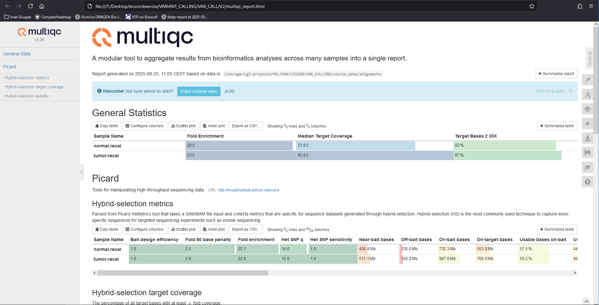
Quality control of the bam files – Part XII
Key observations from hybrid-selection metrics:
1) Hybrid capture efficiency: How did the hybrid capture go?
Fold enrichment is approximately 22.
2) On-target bases: Are most bases on-target?
- About 45% of usable bases are on-target.
- Approximately 90% of bases are within 250 bp of target regions (selected bases).
3) Coverage: What kind of coverages can we expect in the target regions?
De-duplicated coverage is 84x for the normal sample and 114x for the tumor sample, indicating sufficient coverage for downstream analysis.
End of Quality Control of BAM files
Back to top4. Variant Calling
The Art of Finding Genetic Changes
Variant Calling I
After performing quality control on the BAM files, we can proceed to variant calling. For this tutorial, we will use Mutect2, a somatic variant caller from GATK (Broad Institute).
In addition to the BAM files and the reference genome, Mutect2 requires several important inputs:
- --intervals: defines the target regions to analyze, provided in the interval_list format.
- -normal: the sample name of the matched normal sample, i.e. the SM tag in the read group header.
- --germline-resource: a set of known germline variants with population allele frequencies. This helps estimate the probability that a variant in the normal sample is germline.
- --panel-of-normals: a VCF of technical artifact sites derived from normal samples.
Variant Calling II
Create a script called 04_run_mutect2.sh. Consult the Mutect2 manual and replace the FIXME placeholders in the command with the appropriate values for your data.
Then, run the script.
#!/bin/bash
ALIGNDIR=~/project/course_data/alignments
REFDIR=~/project/course_data/reference
RESOURCEDIR=~/project/course_data/resources
VARIANTDIR=~/project/course_data/variants
mkdir -p $VARIANTDIR
gatk Mutect2 \
-R FIXME \
--intervals "$REFDIR"/exome_regions.bed.interval_list \
-I FIXME \
-normal FIXME \
--germline-resource "$RESOURCEDIR"/af-only-gnomad.hg38.subset.vcf.gz \
--panel-of-normals "$RESOURCEDIR"/1000g_pon.hg38.subset.vcf.gz \
-O "$VARIANTDIR"/somatic.vcf.gz
Variant Calling III
💡 Hint:: To obtain the sample name (SM tag) from a BAM file, required for the --normal, you can type:
samtools view -H ../alignments/normal.recal.bam | grep '@RG'
You should get
@RG ID:HWI-ST466.C1TD1ACXX.normal LB:normal PL:ILLUMINA SM:normal PU:HWI-ST466.C1TD1ACXX
Variant Calling IV
Solution
#!/bin/bash
ALIGNDIR=~/project/course_data/alignments
REFDIR=~/project/course_data/reference
RESOURCEDIR=~/project/course_data/resources
VARIANTDIR=~/project/course_data/variants
mkdir -p $VARIANTDIR
gatk Mutect2 \
-R "$REFDIR"/ref_genome.fa \
--intervals "$REFDIR"/exome_regions.bed.interval_list \
-I "$ALIGNDIR"/tumor.recal.bam \
-I "$ALIGNDIR"/normal.recal.bam \
-normal normal \
--germline-resource "$RESOURCEDIR"/af-only-gnomad.hg38.subset.vcf.gz \
--panel-of-normals "$RESOURCEDIR"/1000g_pon.hg38.subset.vcf.gz \
-O "$VARIANTDIR"/somatic.vcf.gz
Variant Calling V
Once variants have been called, the next step is an initial filtering using FilterMutectCalls.
This step accounts for:
- potential technical artifacts,
- possible germline variants, and
- sequencing errors.
It calculates an error probability and seeks to balance recall (keeping true variants) and precision (removing false positives).
Variant Calling VI
Create a script called 05_filter_mutect_calls.sh and run the filtering command on your Mutect2 output.
#!/bin/bash
REFDIR=~/project/course_data/reference
VARIANTDIR=~/project/course_data/variants
# fill the filter column
gatk FilterMutectCalls \
-R "$REFDIR"/ref_genome.fa \
-V "$VARIANTDIR"/somatic.vcf.gz \
-O "$VARIANTDIR"/somatic.filtered.vcf.gz
# create a vcf with variants passing filters (PASS)
bcftools view -f PASS "$VARIANTDIR"/somatic.filtered.vcf.gz -Oz \
> "$VARIANTDIR"/somatic.filtered.PASS.vcf.gz
bcftools index --tbi "$VARIANTDIR"/somatic.filtered.PASS.vcf.gz
Questions to consider:
1) How many variants remain after filtering?
zcat ../variants/somatic.filtered.PASS.vcf.gz | grep -v '^#' | wc -l
2) What were the main reasons variants were filtered out?
singularity exec --bind /storage depot.galaxyproject.org-singularity-bcftools-1.17--haef29d1_0.img bcftools view -H ../variants/somatic.filtered.vcf.gz | cut -f 7 | sort | uniq -c | sort -nr
133 PASS
48 weak_evidence
26 normal_artifact;strand_bias
21 panel_of_normals
17 normal_artifact
13 normal_artifact;slippage;weak_evidence
13 clustered_events;normal_artifact;strand_bias
12 germline;multiallelic;normal_artifact;panel_of_normals
12 base_qual;normal_artifact;strand_bias
9 strand_bias;weak_evidence
9 normal_artifact;weak_evidence
7 slippage;weak_evidence
...
Variant Calling X
To take a first look at the variant calls, we can display the top lines of the filtered VCF file (excluding the header) using bcftools view -H:
singularity exec --bind /storage depot.galaxyproject.org-singularity-bcftools-1.17--haef29d1_0.img bcftools view -H ../variants/somatic.filtered.vcf.gz | head
you should get
chr6 106265 . A G . map_qual;strand_bias;weak_evidence AS_FilterStatus=weak_evidence,map_qual,strand_bias;AS_SB_TABLE=599,532|0,9;DP=1180;ECNT=1;GERMQ=93;MBQ=33,36;MFRL=254,410;MMQ=27,27;MPOS=8;NALOD=1.67;NLOD=80.04;POPAF=6;TLOD=3.99 GT:AD:AF:DP:F1R2:F2R1:FAD:SB 0/0:284,1:0.00671:285:125,0:149,1:276,1:173,111,0,1 0/1:847,8:0.01:855:381,3:423,5:816,8:426,421,0,8
chr6 325357 . G A . PASS AS_FilterStatus=SITE;AS_SB_TABLE=1335,1391|205,129;DP=3173;ECNT=1;GERMQ=93;MBQ=35,31;MFRL=221,220;MMQ=50,42;MPOS=24;NALOD=2.98;NLOD=280.33;POPAF=6;TLOD=719.91 GT:AD:AF:DP:F1R2:F2R1:FAD:SB 0/0:982,0:0.001054:982:457,0:456,0:932,0:477,505,0,0 0/1:1744,334:0.161:2078:817,141:790,156:1641,324:858,886,205,129
chr6 325783 . G C . PASS AS_FilterStatus=SITE;AS_SB_TABLE=1331,1364|230,295;DP=3313;ECNT=1;GERMQ=93;MBQ=36,35;MFRL=247,206;MMQ=49,43;MPOS=25;NALOD=3.12;NLOD=291.5;POPAF=3.33;TLOD=1292.31 GT:AD:AF:DP:F1R2:F2R1:FAD:SB 0/0:969,0:0.0009626:969:293,0:266,0:1037,0:502,467,0,0 0/1:1726,525:0.224:2251:474,147:432,119:1826,499:829,897,230,295
chr6 325901 . G A . PASS AS_FilterStatus=SITE;AS_SB_TABLE=1300,1302|188,168;DP=3022;ECNT=2;GERMQ=93;MBQ=30,32;MFRL=242,268;MMQ=40,40;MPOS=28;NALOD=-2.178;NLOD=271.54;POPAF=2.18;TLOD=1030.6 GT:AD:AF:DP:F1R2:F2R1:FAD:PGT:PID:PS:SB 0|0:973,5:0.005447:978:428,4:408,0:968,14:0|1:325901_G_A:325901:472,501,4,1 0|1:1629,351:0.183:1980:762,185:628,148:1610,381:0|1:325901_G_A:325901:828,801,184,167
chr6 325916 . GTGCTGTATCTGCTGGTGCCTGGAGAGTCATCTGCGCTGGGCTTCTGCGTCCTGGTGTGTGCAA G . PASS AS_FilterStatus=SITE;AS_SB_TABLE=2790,2616|195,148;DP=5950;ECNT=2;GERMQ=93;MBQ=36,36;MFRL=243,270;MMQ=47,40;MPOS=22;NALOD=-2.148;NLOD=456.31;POPAF=3.83;TLOD=937.7 GT:AD:AF:DP:F1R2:F2R1:FAD:PGT:PID:PS:SB 0|0:1985,7:0.004142:1992:426,6:401,1:1711,16:0|1:325901_G_A:325901:1014,971,4,3 0|1:3421,336:0.116:3757:729,161:631,130:2913,371:0|1:325901_G_A:325901:1776,1645,191,145
chr6 1742560 . A G . panel_of_normals AS_FilterStatus=SITE;AS_SB_TABLE=72,96|31,50;DP=262;ECNT=1;GERMQ=93;MBQ=32,33;MFRL=219,241;MMQ=60,60;MPOS=27;NALOD=1.69;NLOD=14.14;PON;POPAF=0.364;TLOD=235.6 GT:AD:AF:DP:F1R2:F2R1:FAD:SB 0/0:48,0:0.02:48:26,0:17,0:47,0:20,28,0,0 0/1:120,81:0.41:201:44,33:61,42:111,77:52,68,31,50
chr6 1916336 . G A . PASS AS_FilterStatus=SITE;AS_SB_TABLE=68,47|39,26;DP=193;ECNT=1;GERMQ=83;MBQ=30,33;MFRL=233,234;MMQ=60,60;MPOS=26;NALOD=1.65;NLOD=13.24;POPAF=1.44;TLOD=187.23 GT:AD:AF:DP:F1R2:F2R1:FAD:SB 0/0:46,0:0.022:46:12,0:29,0:44,0:31,15,0,0 0/1:69,65:0.482:134:43,30:20,27:64,60:37,32,39,26
chr6 1930220 . GA TT . PASS AS_FilterStatus=SITE;AS_SB_TABLE=40,169|10,33;DP=259;ECNT=1;GERMQ=93;MBQ=37,34;MFRL=229,210;MMQ=60,60;MPOS=21;NALOD=1.79;NLOD=18.36;POPAF=6;TLOD=152.54 GT:AD:AF:DP:F1R2:F2R1:FAD:SB 0/0:64,0:0.016:64:29,0:27,0:61,0:11,53,0,0 0/1:145,43:0.207:188:53,21:83,15:141,36:29,116,10,33
chr6 2674999 . A C . PASS AS_FilterStatus=SITE;AS_SB_TABLE=75,17|50,10;DP=155;ECNT=1;GERMQ=63;MBQ=35,36;MFRL=224,222;MMQ=60,60;MPOS=23;NALOD=1.54;NLOD=10.23;POPAF=2.4;TLOD=190.32 GT:AD:AF:DP:F1R2:F2R1:FAD:SB 0/0:34,0:0.028:34:19,0:15,0:34,0:27,7,0,0 0/1:58,60:0.514:118:25,22:27,33:53,56:48,10,50,10
chr6 2834013 . C G . PASS AS_FilterStatus=SITE;AS_SB_TABLE=42,87|21,52;DP=214;ECNT=1;GERMQ=93;MBQ=38,36;MFRL=217,242;MMQ=60,60;MPOS=25;NALOD=1.68;NLOD=13.85;POPAF=6;TLOD=245.04 GT:AD:AF:DP:F1R2:F2R1:FAD:SB 0/0:53,0:0.02:53:21,0:22,0:46,0:18,35,0,0 0/1:76,73:0.494:149:31,40:38,30:73,71:24,52,21,52
Variant Calling VIII
This shows the main VCF columns for the first few variants:
- CHROM,POS → genomic coordinates of the variant
- REF,ALT → reference and alternative alleles
- QUAL,FILTER → quality score and applied filters
- INFO,FORMAT,SAMPLE columns → detailed annotations (e.g. depth, allele frequency, likelihoods)
👉 At this stage, you should notice that both the INFO and FORMAT fields are populated, which we’ll explore in more detail next.
Variant Calling VIII
To explore what the FILTER field contains:
singularity exec --bind /storage depot.galaxyproject.org-singularity-bcftools-1.17--haef29d1_0.img bcftools view -h ../variants/somatic.filtered.vcf.gz | grep "^##FILTER"
##FILTER=<ID=PASS,Description="All filters passed">
##FILTER=<ID=FAIL,Description="Fail the site if all alleles fail but for different reasons.">
##FILTER=<ID=base_qual,Description="alt median base quality">
##FILTER=<ID=clustered_events,Description="Clustered events observed in the tumor">
##FILTER=<ID=contamination,Description="contamination">
##FILTER=<ID=duplicate,Description="evidence for alt allele is overrepresented by apparent duplicates">
##FILTER=<ID=fragment,Description="abs(ref - alt) median fragment length">
##FILTER=<ID=germline,Description="Evidence indicates this site is germline, not somatic">
##FILTER=<ID=haplotype,Description="Variant near filtered variant on same haplotype.">
##FILTER=<ID=low_allele_frac,Description="Allele fraction is below specified threshold">
##FILTER=<ID=map_qual,Description="ref - alt median mapping quality">
##FILTER=<ID=multiallelic,Description="Site filtered because too many alt alleles pass tumor LOD">
##FILTER=<ID=n_ratio,Description="Ratio of N to alt exceeds specified ratio">
##FILTER=<ID=normal_artifact,Description="artifact_in_normal">
##FILTER=<ID=orientation,Description="orientation bias detected by the orientation bias mixture model">
##FILTER=<ID=panel_of_normals,Description="Blacklisted site in panel of normals">
##FILTER=<ID=position,Description="median distance of alt variants from end of reads">
##FILTER=<ID=possible_numt,Description="Allele depth is below expected coverage of NuMT in autosome">
##FILTER=<ID=slippage,Description="Site filtered due to contraction of short tandem repeat region">
##FILTER=<ID=strand_bias,Description="Evidence for alt allele comes from one read direction only">
##FILTER=<ID=strict_strand,Description="Evidence for alt allele is not represented in both directions">
##FILTER=<ID=weak_evidence,Description="Mutation does not meet likelihood threshold">
The weak_evidence filter indicates that these variants did not meet the likelihood threshold. In practice, this means the combined error probability — accounting for technical artifacts, possible germline variants, and sequencing noise — was too high.
Other filters in Mutect2 are hard filters, which apply strict cutoffs on individual features (e.g., depth, mapping quality).
Next, let’s explore the VCF in more detail to better understand:
- what kinds of variants remain, and
- characteristics such as their variant allele frequency (VAF).
Variant Calling XIII
To summarize specific information from the VCF, you can use bcftools query. For example, for getting the likelihood TLOD of variant and depth DP of each sample, you can do the following (for the first 20 variants):
singularity exec --bind /storage depot.galaxyproject.org-singularity-bcftools-1.17--haef29d1_0.img bcftools query -f '%CHROM\t%POS\t%FILTER\t\t%INFO/TLOD\t[%SAMPLE=%DP;]\n' ../variants/somatic.filtered.vcf.gz | head -20
chr6 106265 map_qual;strand_bias;weak_evidence 3.99 normal=285;tumor=855;
chr6 325357 PASS 719.91 normal=982;tumor=2078;
chr6 325783 PASS 1292.31 normal=969;tumor=2251;
chr6 325901 PASS 1030.6 normal=978;tumor=1980;
chr6 325916 PASS 937.7 normal=1992;tumor=3757;
chr6 1742560 panel_of_normals 235.6 normal=48;tumor=201;
chr6 1916336 PASS 187.23 normal=46;tumor=134;
chr6 1930220 PASS 152.54 normal=64;tumor=188;
chr6 2674999 PASS 190.32 normal=34;tumor=118;
chr6 2834013 PASS 245.04 normal=53;tumor=149;
chr6 2840548 PASS 274.4 normal=45;tumor=183;
chr6 3110986 weak_evidence 3.03 normal=61;tumor=219;
chr6 3723708 PASS 266.67 normal=58;tumor=201;
chr6 4892169 weak_evidence 4.43 normal=41;tumor=201;
chr6 5103987 germline;multiallelic;normal_artifact;panel_of_normals 13.57,257.27 normal=44;tumor=149;
chr6 6250887 PASS 260.99 normal=54;tumor=196;
chr6 7176847 PASS 107.39 normal=36;tumor=116;
chr6 7585458 PASS 171.88 normal=72;tumor=249;
chr6 7833697 PASS 122.24 normal=15;tumor=77;
chr6 7883281 germline 99.5 normal=17;tumor=60;
Variant Calling XIV
Alternatively, extract the variant allele frequency (AF) for each sample, and compare it to the FILTER column. You should observe that when the filter is weak_evidence, the tumor’s VAF is typically low.
singularity exec --bind /storage depot.galaxyproject.org-singularity-bcftools-1.17--haef29d1_0.img bcftools query -f '%CHROM\t%POS\t%FILTER\t\t%INFO/TLOD\t[%SAMPLE=%AF;]\n' ../variants/somatic.filtered.vcf.gz | head -20
chr6 106265 map_qual;strand_bias;weak_evidence 3.99 normal=0.00671;tumor=0.01;
chr6 325357 PASS 719.91 normal=0.001054;tumor=0.161;
chr6 325783 PASS 1292.31 normal=0.0009626;tumor=0.224;
chr6 325901 PASS 1030.6 normal=0.005447;tumor=0.183;
chr6 325916 PASS 937.7 normal=0.004142;tumor=0.116;
chr6 1742560 panel_of_normals 235.6 normal=0.02;tumor=0.41;
chr6 1916336 PASS 187.23 normal=0.022;tumor=0.482;
chr6 1930220 PASS 152.54 normal=0.016;tumor=0.207;
chr6 2674999 PASS 190.32 normal=0.028;tumor=0.514;
chr6 2834013 PASS 245.04 normal=0.02;tumor=0.494;
chr6 2840548 PASS 274.4 normal=0.021;tumor=0.522;
chr6 3110986 weak_evidence 3.03 normal=0.017;tumor=0.019;
chr6 3723708 PASS 266.67 normal=0.017;tumor=0.42;
chr6 4892169 weak_evidence 4.43 normal=0.024;tumor=0.02;
chr6 5103987 germline;multiallelic;normal_artifact;panel_of_normals 13.57,257.27 normal=0.037,0.825;tumor=0.077,0.834;
chr6 6250887 PASS 260.99 normal=0.018;tumor=0.459;
chr6 7176847 PASS 107.39 normal=0.026;tumor=0.319;
chr6 7585458 PASS 171.88 normal=0.015;tumor=0.283;
chr6 7833697 PASS 122.24 normal=0.057;tumor=0.513;
chr6 7883281 germline 99.5 normal=0.05;tumor=0.476;
End of Variant Calling
Back to the Variant Calling I5. Variant Annotation and Filtering
Turning Variants into Insights
Variant Annotation and Filtering -Part I
Ensembl VEP (Variant Effect Predictor)
VEP is a versatile and widely used tool for annotating, analyzing, and prioritizing genomic variants. In cancer genomics, it plays a key role in assessing the functional consequences of somatic mutations. With VEP, we can address questions such as:
- How damaging is a specific somatic mutation, based on reference databases?
- What is the impact of this mutation in the cancer type under study?
- Is the mutation already known in this cancer?
- Is the mutation associated with sensitivity or resistance to certain chemotherapies?
Variant Annotation and Filtering II
Why do we need VEP?
Modern sequencing technologies detect thousands of somatic mutations, which are rarely examined individually. We need systematic tools to summarize, prioritize, and interpret these variants.
VEP helps to:
- Classify SNVs consistently.
- Highlight the most biologically or clinically relevant variants.
- Focus analyses on mutations most likely to have functional consequences.
Variant Annotation and Filtering II
Transcript selection
VEP reports variant consequences across all overlapping transcripts. This can result in multiple annotations per variant. Several strategies exist to simplify this output:
- --pick: Selects one consequence per variant using a predefined severity hierarchy (HIGH > MODERATE > LOW > MODIFIER).
- --pick_allele: Selects one consequence per variant allele.
- --pick_allele_gene: Selects one consequence per variant allele per gene.
- --per_gene: Selects one consequence per gene.
- --flag_pick: Flags the chosen consequence but retains all other annotations.
Variant Annotation and Filtering III
Consequence Priority
VEP ranks consequences by predicted severity, prioritizing variants with the greatest potential impact on gene function.
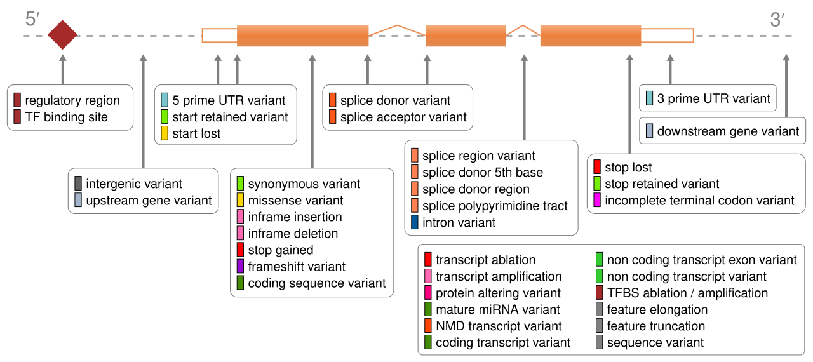
Image from the Ensembl VEP website.
Variant Annotation and Filtering III
Order of severity Priority
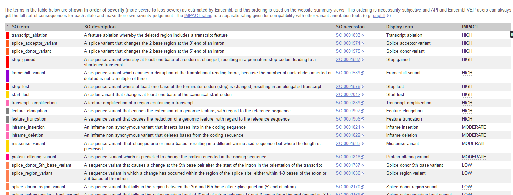
Image from the Ensembl VEP website.
Variant Annotation and Filtering IV
--cache option
- By default, VEP installs its cache and plugins under ~/.vep/.
- For this course, you should point VEP to /data/.vep using:
--cache /data/.vep
Variant Annotation and Filtering V
Input data
Copy the following variants into ../variants/cancer_variants.vcf
##fileformat=VCFv4.2
#CHROM POS ID REF ALT QUAL FILTER INFO
chr1 11190510 rs6603781 G A . PASS .
chr3 178936091 rs63751289 G A . PASS .
chr4 55141055 rs1800744 A G . PASS .
chr5 112175770 rs121913343 C T . PASS .
chr7 55242465 rs121913529 A T . PASS .
chr7 140453136 rs121913530 A T . PASS .
chr10 89624230 rs61751507 G A . PASS .
chr11 108098576 rs386833395 G A . PASS .
chr13 32914438 rs80357090 T C . PASS .
chr13 32936646 rs28897743 C T . PASS .
chr17 7577121 rs28934578 C T . PASS .
chr17 7674894 rs28934574 G A . PASS .
chr17 41245466 rs28897686 G A . PASS .
Variant Annotation and Filtering V
Task
Annotate these variants with VEP and identify which genes are affected.
VEP accepts VCF (.vcf or .vcf.gz + index) and several other input formats.
See the VEP input formats documentation
Variant Annotation and Filtering VI
Create a script called 06_vep.sh and run.
vep -i cancer_variants.vcf \
--cache /data/.vep \
--species homo_sapiens \
--offline \
--force_overwrite \
--assembly GRCh38 \
--format vcf \
--symbol \
--sift b \
--polyphen b \
--pick \
--domains \
--output_file output.txt
Variant Annotation and Filtering VIII
Example output
## VEP command-line: vep --assembly GRCh38 --cache /data/.vep --database 0 --force_overwrite --format vcf --input_file cancer_variants.vcf --offline --output_file output.txt --pick --symbol
#Uploaded_variation Location Allele Gene Feature Feature_type Consequence cDNA_position CDS_position Protein_position Amino_acids Codons Existing_variation Extra
rs121913529 chr7:55242465 T ENSG00000280890 ENST00000626532 Transcript intron_variant,non_coding_transcript_variant - - - - - - IMPACT=MODIFIER;STRAND=-1;SYMBOL=ELDR;SYMBOL_SOURCE=HGNC;HGNC_ID=HGNC:49511
rs28934578 chr17:7577121 T ENSG00000161960 ENST00000293831 Transcript missense_variant 597 580 194 D/Y Gac/Tac - IMPACT=MODERATE;STRAND=1;SYMBOL=EIF4A1;SYMBOL_SOURCE=HGNC;HGNC_ID=HGNC:3282
rs28897743 chr13:32936646 T - - - intergenic_variant - - - - - - IMPACT=MODIFIER
rs28934574 chr17:7674894 A ENSG00000141510 ENST00000269305 Transcript stop_gained 779 637 213 R/* Cga/Tga - IMPACT=HIGH;STRAND=-1;SYMBOL=TP53;SYMBOL_SOURCE=HGNC;HGNC_ID=HGNC:11998
rs28897686 chr17:41245466 A ENSG00000241595 ENST00000334109 Transcript upstream_gene_variant - - - - - - IMPACT=MODIFIER;DISTANCE=4221;STRAND=1;SYMBOL=KRTAP9-4;SYMBOL_SOURCE=HGNC;HGNC_ID=HGNC:18902
This example shows rs28934574, a TP53 stop-gained mutation commonly observed in cancer
👉 Try running VEP without --pick or with --everything to explore the difference. Running VEP also produces an output.txt_summary.html file with annotation statistics.
Variant Annotation and Filtering IX
The shortcut option
The shortcut option --everything (-e) expands the annotation with:
--sift b,
--polyphen b,
--ccds,
--hgvs,
--symbol,
--numbers,
--domains,
--regulatory,
--canonical,
--protein,
--biotype,
--af,
--af_1kg,
--af_esp,
--af_gnomade,
--af_gnomadg,
--max_af,
--pubmed,
--uniprot,
--mane,
--tsl,
--appris,
--variant_class,
--gene_phenotype,
--mirna
Variant Annotation and Filtering XI
Damage prediction tools
- SIFT: Predicts functional impact based on sequence homology and amino acid properties.
- PolyPhen: Combines evolutionary, sequence, and structural features for prediction.
Variant Annotation and Filtering XII
Mutect2 results annotation
In the example above we annotated a simple VCF. Now, let’s extend this to Mutect2 somatic calls from WES of chromosomes 6 and 17.
These calls yield a table of variants, which can be enriched with functional and clinical annotations.
Variant Annotation and Filtering XIII
Extract from the resulting Mutect2 somatic call
Let’s use VEP to annotate this file
##fileformat=VCFv4.2
#CHROM POS ID REF ALT QUAL FILTER INFO
chr6 325357 . G A . PASS .
chr6 325783 . G C . PASS .
chr6 325901 . G A . PASS .
chr6 1916336 . G A . PASS .
chr6 2674999 . A C . PASS .
chr6 2834013 . C G . PASS .
chr6 2840548 . C T . PASS .
chr6 3723708 . C G . PASS .
chr17 745040 . G T . PASS .
chr17 1492466 . C T . PASS .
chr17 2364457 . T G . PASS .
chr17 3433669 . G T . PASS .
chr17 4545725 . T C . PASS .
chr17 4934441 . G T . PASS .
chr17 5007047 . C T . PASS .
chr17 7560755 . G A . PASS .
chr17 7588500 . G C . PASS .
Variant Annotation and Filtering XIV
The somatic variant call can be annotated with this command
vep -i ~/project/course_data/resources/Mutect2_data/somatic.filtered.PASS.vcf.gz \
--cache /data/.vep \
--species homo_sapiens \
--assembly GRCh38 \
--offline \
--format vcf \
--symbol \
--force_overwrite \
--everything \
--output_file chr6ch17_mutect2_annotated.txt
Variant Annotation and Filtering XV
Alternative output formats
VEP can also generate TSV-formatted results.
See the VEP formats documentation.
Variant Annotation and Filtering XVI
interesting variants chr6ch17_mutect2_annotated.txt???
Variant Annotation and Filtering XVI
Filtering annotated results
When analyzing chr6ch17_mutect2_annotated.txt, we may want to keep only deleterious or moderate/high impact variants.
filter_vep \
-i chr6ch17_mutect2_annotated.txt \
-o chr6ch17_mutect2_annotated_filtered.txt \
--filter "(IMPACT is HIGH or IMPACT is MODERATE) or (SIFT match deleterious or PolyPhen match probably_damaging)"
⚠️ Note:
- Using OR retrieves variants that meet either criterion.
- Using AND is more stringent, keeping only variants supported by both predictions.
Variant Annotation and Filtering XVII
Adding cancer-specific annotations
We can integrate additional resources such as ClinVar for cancer-specific interpretation.
Objective: Add ClinVar data to the VEP output and filter for potentially pathogenic variants
Variant Annotation and Filtering XVI
Solution
# Download ClinVar VCF
# Run VEP with cancer-specific annotations
vep -i ~/project/course_data/resources/Mutect2_data/somatic.filtered.PASS.vcf.gz \
--cache /data/.vep \
--assembly GRCh38 \
--format vcf \
--force_overwrite \
--fork 2 \
--everything \
--custom ~/project/course_data/resources/clinvar/clinvar.vcf.gz,ClinVar,vcf,exact,0,CLNSIG,CLNREVSTAT,CLNDN \
--output_file chr6ch17_mutect2_annotated_with_clinVar.txt
# Filter results
filter_vep \
-i chr6ch17_mutect2_annotated_with_clinVar.txt \
-o chr6ch17_mutect2_annotated_with_clinVar_filtered.txt \
--force_overwrite \
--filter "(IMPACT is HIGH or IMPACT is MODERATE) or \
(SIFT match deleterious or PolyPhen match probably_damaging) or \
(ClinVar_CLNSIG match pathogenic)"
# Generate summary (using simple grep/awk commands)
echo "Mutation Type Summary:" > summary.txt
grep -v "#" chr6ch17_mutect2_annotated_with_clinVar_filtered.txt | cut -f7 | sort | uniq -c >> summary.txt
Variant Annotation and Filtering XVI
ClinVar interpretation categories
- Pathogenic: Strong evidence variant causes disease
- Likely pathogenic: Probable disease-causing
- Uncertain significance (VUS): Insufficient evidence
- Likely benign: Probably not disease-causing
- Benign: Strong evidence variant is harmless
- Conflicting: interpretations: Different submitters disagree
- Not provided: No interpretation given
- Drug response: Affects response to therapy
- Other: Miscellaneous interpretations
Variant Annotation and Filtering XVII
Visualization
Once VEP annotations are ready (e.g., chr6ch17_mutect2_annotated_with_clinVar.txt),we can visualize results in R:
- Distribution of variant consequences
- Consequences by chromosome
- Consequences colored by predicted impact
- Most common variant classes
- Most common biotypes
Variant Annotation and Filtering XVI
Examples of possible plots in R
# get libraries
library(tidyverse);library(magrittr)
# VEP output in
vep_data <- read.table("chr6ch17_mutect2_annotated_with_clinVar.txt",
header=F,
sep="\t",
comment.char="#")
# The standard VEP column names are:
colNames <- c("#Uploaded_variation", "Location", "Allele", "Gene", "Feature", "Feature_type",
"Consequence", "cDNA_position", "CDS_position", "Protein_position", "Amino_acids",
"Codons", "Existing_variation", "Extra")
# Set column names
colnames(vep_data) <- colNames
# Split when it contains multiple values
consequences_df <- vep_data %>%
separate_rows(Consequence, sep="&") %>%
select(Consequence)
# get chr
vep_data <- vep_data %>%
separate(Location, into = c("chr", "position"), sep=":") %>%
mutate(chr = factor(chr, levels = c("chr6", "chr17")))
# Extract IMPACT from Extra column
vep_data$IMPACT <- gsub(".*IMPACT=([^;]+).*", "\\1", vep_data$Extra)
# get nice data out of the df
extract_field <- function(data, field) {
gsub(paste0(".*", field, "=([^;]+).*"), "\\1", data$Extra)
}
# combine multiple fields
mutate(
IMPACT = extract_field(., "IMPACT"),
SYMBOL = extract_field(., "SYMBOL"),
VARIANT_CLASS = extract_field(., "VARIANT_CLASS"),
BIOTYPE = extract_field(., "BIOTYPE")
)
Variant Annotation and Filtering XVII
Next steps
With an annotated set of somatic variants, we can:
- Add other databases (COSMIC, CancerHotspots, OncoKB, etc.).
- Use additional VEP plugins depending on the biological question.
- Investigate candidate driver genes.
- Consider population frequencies (to exclude common variants).
- Assess drug–gene interactions.
- Explore the literature for functional insights.
- Visualize results for clearer interpretation.
Variant Annotation and Filtering XVII
1. Consequence plot, to visualize the distribution of consequences
# consequence plot
ggplot(vep_data, aes(x=reorder(Consequence, table(Consequence)[Consequence]))) +
geom_bar() +
coord_flip() +
theme_minimal() +
labs(title="Distribution of \n Variant Consequences",
x="Consequence Type",
y="Count")
Variant Annotation and Filtering XVII
2. Consequence plot, by chromosome
# consequence plot
ggplot(vep_data, aes(x=reorder(Consequence, table(Consequence)[Consequence]))) +
geom_bar() +
coord_flip() +
theme_minimal() +
labs(title="Distribution of \n Variant Consequences",
x="Consequence Type",
y="Count") +
facet_grid(~chr) +
theme(
legend.position = "bottom"
)
Variant Annotation and Filtering XVII
3. Can we see the consequence colored by impact
# Impact + Consequence plot
ggplot(vep_data, aes(x=reorder(Consequence, table(Consequence)[Consequence]), fill=IMPACT)) +
geom_bar() +
coord_flip() +
theme_minimal() +
scale_fill_brewer(palette="Set1") +
labs(title="Variant Consequences \n by Impact",
x="Consequence Type",
y="Count") +
theme(
legend.position = "bottom"
)
Variant Annotation and Filtering XVII
4. Can we see the consequence colored by impact by chromosome
# Impact + consequence plot x chr
ggplot(vep_data, aes(x=reorder(Consequence, table(Consequence)[Consequence]), fill=IMPACT)) +
geom_bar() +
coord_flip() +
theme_minimal() +
scale_fill_brewer(palette="Set1") +
labs(title="Variant Consequences \n by Impact",
x="Consequence Type",
y="Count") +
facet_grid(~chr) +
theme(
legend.position = "bottom"
)
Variant Annotation and Filtering XVII
5. What are the most common variant classes?
# variant class plot
vep_data %>%
count(VARIANT_CLASS) %>% # Count the classees
arrange(desc(n)) %>% # Sort in descending ord
ggplot(aes(x = reorder(VARIANT_CLASS, n), y = n)) +
geom_bar(stat = "identity", fill = "steelblue") +
coord_flip() +
theme_minimal() +
labs(title = "Distribution of \n Variant Classes",
x = "Variant Class",
y = "Count")
Variant Annotation and Filtering XXII
6. What are the most common biotypes?
# biotype distribution
ggplot(vep_data, aes(x=reorder(BIOTYPE, table(BIOTYPE)[BIOTYPE]))) +
geom_bar(fill="steelblue") +
coord_flip() +
theme_minimal() +
labs(title="Distribution of \n Biotypes",
x="Biotype",
y="Count")
Variant Annotation and Filtering XXIII
References
- McLaren W, et al. The Ensembl Variant Effect Predictor. Genome Biology (2016)
- Eilbeck K, et al. The Sequence Ontology: a tool for the unification of genome annotations. Genome Biology (2005)
- Richards S, et al. Standards and guidelines for the interpretation of sequence variants. Genetics in Medicine (2015).
- Cancer variant analysis course, SIB.
- Precision medicine bioinformatics course, Griffith labMcDonnell Genome Institute - Washington University.